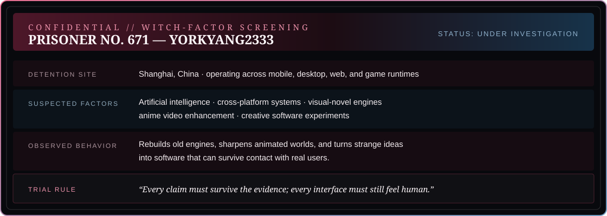
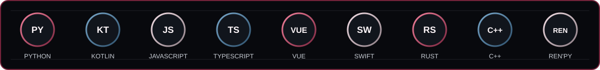

Build tools that respect attention.
I like software that feels calm in the hand: clear when it succeeds, honest when it fails, and expressive enough to invite a second look.
A working profile kept by Gokucho: part engineer, part toolmaker, always looking for the human shape of a system.

I like software that feels calm in the hand: clear when it succeeds, honest when it fails, and expressive enough to invite a second look.

Find the friction before choosing the framework.
Make the smallest version that can answer the real question.
Remove the noise until the useful part feels direct.
Leave the work open enough for someone else to follow.
Multimodal interfaces and AI systems that turn complex inputs into useful actions.
Cross-platform infrastructure for visual novels, media playback, and expressive software.
Anime enhancement and media tools that care about the final frame as much as the pipeline.